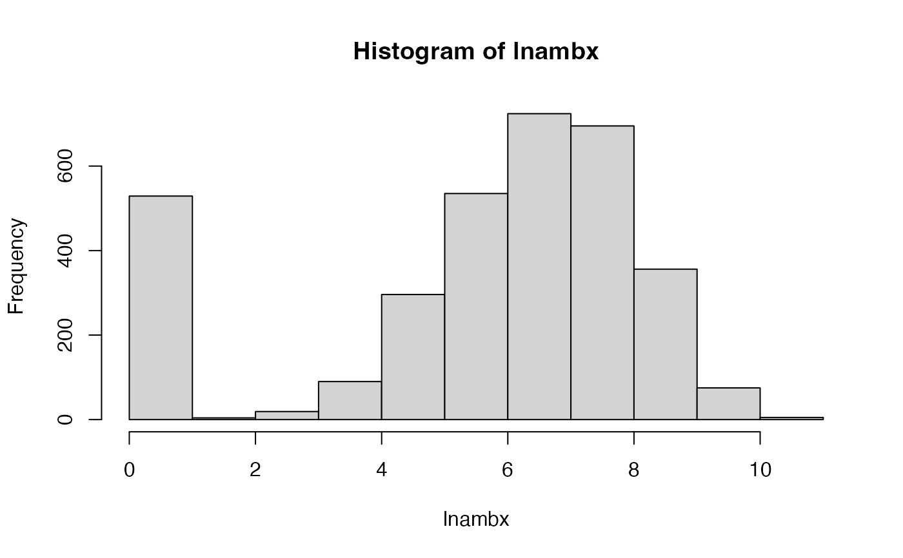

The MEPS is a set of large-scale surveys of families, individuals and their medical providers (doctors, hospitals, pharmacies, etc.) in the United States. It has data on the health services Americans use, how often they use them, the cost of these services and how they are paid, as well as data on the cost and reach of health insurance available to American workers. The sample is restricted to persons aged between 21 and 64 years and contains a variable response with 3328 observations of outpatient costs, of which 526 (15.8%) correspond to unobserved expenditure values and identified as zero expenditure for adjustment of the models. It also includes the following explanatory variables:
educ: education status
age: Age
income: income
female: gender
vgood: a numeric vector
good: a numeric vector
hospexp: a numeric vector
totchr: number of chronic diseases
ffs: a numeric vector
dhospexp: a numeric vector
age2: a numeric vector
agefem: a numeric vector
fairpoor: a numeric vector
year01: a numeric vector
instype: a numeric vector
ambexp: a numeric vector
lambexp: log ambulatory expenditures
blhisp: ethnicity
instype_s1: a numeric vector
dambexp: dummy variable, ambulatory expenditures
lnambx: a numeric vector
ins: insurance status
References
Cameron A Colin, Pravin K Trivedi (2009). “Microeconometrics using STATA.” Lakeway Drive, TX: Stata Press Books. Mikhail Zhelonkin, Marc G. Genton, Elvezio Ronchetti (2019). ssmrob: Robust Estimation and Inference in Sample Selection Models. R package version 0.7, https://CRAN.R-project.org/package=ssmrob. Ott Toomet, Arne Henningsen (2008). “Sample Selection Models in R: Package sampleSelection.” Journal of Statistical Software, 27(7). https://www.jstatsoft.org/article/view/v027i07.
Examples
data(MEPS2001)
attach(MEPS2001)
#> The following objects are masked from MEPS2001 (pos = 3):
#>
#> age, age2, agefem, ambexp, blhisp, dambexp, dhospexp, educ,
#> fairpoor, female, ffs, good, hospexp, income, ins, instype,
#> instype_s1, lambexp, lnambx, totchr, vgood, year01
#> The following objects are masked from MEPS2001 (pos = 4):
#>
#> age, age2, agefem, ambexp, blhisp, dambexp, dhospexp, educ,
#> fairpoor, female, ffs, good, hospexp, income, ins, instype,
#> instype_s1, lambexp, lnambx, totchr, vgood, year01
#> The following objects are masked from Mroz87:
#>
#> age, educ
#> The following objects are masked from MEPS2001 (pos = 6):
#>
#> age, age2, agefem, ambexp, blhisp, dambexp, dhospexp, educ,
#> fairpoor, female, ffs, good, hospexp, income, ins, instype,
#> instype_s1, lambexp, lnambx, totchr, vgood, year01
#> The following objects are masked from MEPS2001 (pos = 7):
#>
#> age, age2, agefem, ambexp, blhisp, dambexp, dhospexp, educ,
#> fairpoor, female, ffs, good, hospexp, income, ins, instype,
#> instype_s1, lambexp, lnambx, totchr, vgood, year01
#> The following objects are masked from MEPS2001 (pos = 8):
#>
#> age, age2, agefem, ambexp, blhisp, dambexp, dhospexp, educ,
#> fairpoor, female, ffs, good, hospexp, income, ins, instype,
#> instype_s1, lambexp, lnambx, totchr, vgood, year01
hist(lnambx)

selectEq <- dambexp ~ age + female + educ + blhisp + totchr + ins + income
outcomeEq <- lnambx ~ age + female + educ + blhisp + totchr + ins
HeckmanCL(selectEq, outcomeEq, data = MEPS2001)
#> Start not provided using default start values.
#> $coefficients
#> (Intercept) age female educ blhisp totchr
#> -0.675795860 0.087906869 0.662658056 0.061937317 -0.363964276 0.796955757
#> ins income (Intercept) age female educ
#> 0.170142972 0.002708489 5.044231884 0.211960084 0.348121686 0.018709407
#> blhisp totchr ins sigma rho
#> -0.218575570 0.539920986 -0.029993139 1.271018191 -0.130612733
#>
#> $value
#> [1] -5836.219
#>
#> $loglik
#> [1] 5836.219
#>
#> $counts
#> gradient
#> 62
#>
#> $hessian
#> [,1] [,2] [,3] [,4] [,5]
#> [1,] -1195.905826 -4597.86531 -447.186469 -15544.1100 -4.674518e+02
#> [2,] -4597.865306 -19140.48413 -1715.633186 -59713.7828 -1.731977e+03
#> [3,] -447.186469 -1715.63319 -447.186469 -5839.2044 -1.947309e+02
#> [4,] -15544.109967 -59713.78283 -5839.204358 -210324.2860 -5.707166e+03
#> [5,] -467.451769 -1731.97693 -194.730882 -5707.1663 -4.674518e+02
#> [6,] -203.932598 -846.15339 -73.568837 -2581.8245 -7.781770e+01
#> [7,] -402.337670 -1656.33768 -132.764527 -5304.9361 -1.416204e+02
#> [8,] -40618.222098 -162172.25222 -13128.794251 -553590.6335 -1.349779e+04
#> [9,] -82.943913 -323.27086 -34.262339 -1091.7291 -2.984656e+01
#> [10,] -323.270721 -1362.64456 -130.605967 -4251.7653 -1.128907e+02
#> [11,] -34.262339 -130.60608 -34.262339 -447.1160 -1.448256e+01
#> [12,] -1091.724803 -4251.74763 -447.112320 -14948.8296 -3.697501e+02
#> [13,] -29.846563 -112.89070 -14.482563 -369.7504 -2.984656e+01
#> [14,] -16.773405 -70.28528 -6.016490 -212.2697 -6.304884e+00
#> [15,] -28.904076 -118.62313 -10.624417 -386.6187 -9.913931e+00
#> [16,] -4.938198 -22.40414 -3.161299 -70.6251 -9.991158e-01
#> [17,] -36.226996 -146.99831 -6.985817 -458.3846 -1.907412e+01
#> [,6] [,7] [,8] [,9] [,10]
#> [1,] -203.932598 -402.337670 -40618.2221 -82.94391 -323.27072
#> [2,] -846.153394 -1656.337677 -162172.2522 -323.27086 -1362.64456
#> [3,] -73.568837 -132.764527 -13128.7943 -34.26234 -130.60597
#> [4,] -2581.824520 -5304.936087 -553590.6335 -1091.72909 -4251.76526
#> [5,] -77.817697 -141.620426 -13497.7932 -29.84656 -112.89068
#> [6,] -236.705427 -59.413222 -6706.3811 -16.77341 -70.28514
#> [7,] -59.413222 -402.337670 -15630.9848 -28.90408 -118.62307
#> [8,] -6706.381092 -15630.984769 -2086232.0062 -2885.11895 -11725.33891
#> [9,] -16.773407 -28.904076 -2885.1190 -1742.98474 -7187.34648
#> [10,] -70.285142 -118.623067 -11725.3389 -7187.34648 -31810.53541
#> [11,] -6.016491 -10.624417 -1028.8471 -964.22175 -3952.66634
#> [12,] -212.265442 -386.616758 -39741.9386 -23662.35863 -97654.46178
#> [13,] -6.304884 -9.913931 -877.0457 -481.56051 -1899.01909
#> [14,] -19.590041 -5.309898 -567.3374 -967.37661 -4325.05311
#> [15,] -5.309898 -28.904076 -1140.0707 -656.64301 -2798.71771
#> [16,] -2.714922 -2.295441 -229.7735 53.11181 202.44594
#> [17,] -3.703175 -12.195601 -1394.1792 -525.34912 -2007.40888
#> [,11] [,12] [,13] [,14] [,15]
#> [1,] -34.262339 -1091.7248 -29.846563 -16.773405 -28.904076
#> [2,] -130.606081 -4251.7476 -112.890697 -70.285284 -118.623128
#> [3,] -34.262339 -447.1123 -14.482563 -6.016490 -10.624417
#> [4,] -447.116013 -14948.8296 -369.750404 -212.269665 -386.618700
#> [5,] -14.482563 -369.7501 -29.846563 -6.304884 -9.913931
#> [6,] -6.016491 -212.2654 -6.304884 -19.590041 -5.309898
#> [7,] -10.624417 -386.6168 -9.913931 -5.309898 -28.904076
#> [8,] -1028.847145 -39741.9386 -877.045733 -567.337376 -1140.070743
#> [9,] -964.221746 -23662.3586 -481.560511 -967.376610 -656.643006
#> [10,] -3952.666340 -97654.4618 -1899.019089 -4325.053113 -2798.717708
#> [11,] -964.221746 -13068.0237 -286.232076 -588.676146 -334.737259
#> [12,] -13068.023735 -332253.1106 -6135.228048 -13041.414297 -9013.492840
#> [13,] -286.232076 -6135.2280 -481.560511 -246.394196 -163.198951
#> [14,] -588.676146 -13041.4143 -246.394196 -1677.049557 -331.715094
#> [15,] -334.737259 -9013.4928 -163.198951 -331.715094 -656.643006
#> [16,] 18.586195 685.1003 21.599899 7.448278 17.362075
#> [17,] -184.775661 -6783.5851 -213.097959 -75.503197 -172.496432
#> [,16] [,17]
#> [1,] -4.9381978 -36.226996
#> [2,] -22.4041372 -146.998307
#> [3,] -3.1612987 -6.985817
#> [4,] -70.6251010 -458.384615
#> [5,] -0.9991158 -19.074125
#> [6,] -2.7149221 -3.703175
#> [7,] -2.2954414 -12.195601
#> [8,] -229.7734549 -1394.179228
#> [9,] 53.1118075 -525.349119
#> [10,] 202.4459395 -2007.408881
#> [11,] 18.5861955 -184.775661
#> [12,] 685.1002839 -6783.585092
#> [13,] 21.5998994 -213.097959
#> [14,] 7.4482778 -75.503197
#> [15,] 17.3620753 -172.496432
#> [16,] -3471.9641475 -140.866251
#> [17,] -140.8662514 -302.373669
#>
#> $fisher_infoHC
#> [,1] [,2] [,3] [,4] [,5]
#> [1,] 3.764735e-02 -2.981593e-03 -6.860856e-04 -1.869132e-03 -4.210178e-03
#> [2,] -2.981593e-03 7.519042e-04 -7.409563e-05 3.185812e-05 1.495089e-04
#> [3,] -6.860856e-04 -7.409563e-05 3.713363e-03 -6.268788e-05 -2.462773e-04
#> [4,] -1.869132e-03 3.185812e-05 -6.268788e-05 1.447047e-04 1.558729e-04
#> [5,] -4.210178e-03 1.495089e-04 -2.462773e-04 1.558729e-04 3.828353e-03
#> [6,] -5.774784e-04 -2.405421e-04 7.057135e-05 3.388814e-05 4.716555e-05
#> [7,] -3.868819e-05 -2.732537e-04 1.904161e-04 -9.987063e-06 6.842619e-05
#> [8,] 2.842623e-05 -6.512073e-06 1.226685e-05 -5.127908e-06 5.134956e-06
#> [9,] -2.649333e-03 3.069526e-04 -2.723476e-04 8.681478e-05 5.490042e-04
#> [10,] 1.644227e-04 -4.146015e-05 1.433242e-05 1.548558e-07 -2.220392e-05
#> [11,] 2.109385e-04 -3.650138e-05 -9.437032e-05 3.366304e-06 -7.156666e-05
#> [12,] 1.107352e-04 -4.608261e-06 1.043375e-05 -6.599734e-06 -1.708046e-05
#> [13,] 1.158974e-04 1.552953e-05 -4.412011e-05 -9.490493e-06 -1.580959e-04
#> [14,] 1.076544e-04 -1.654084e-05 6.295896e-05 6.510032e-07 -5.763740e-05
#> [15,] 6.753908e-05 -1.065357e-10 1.108824e-05 1.315014e-06 -3.292956e-05
#> [16,] -3.080428e-05 7.411621e-06 -1.543430e-05 -3.359894e-07 1.518390e-05
#> [17,] 6.970320e-04 -1.629732e-04 2.957542e-04 4.406881e-06 -3.093799e-04
#> [,6] [,7] [,8] [,9] [,10]
#> [1,] -5.774784e-04 -3.868819e-05 2.842623e-05 -2.649333e-03 1.644227e-04
#> [2,] -2.405421e-04 -2.732537e-04 -6.512073e-06 3.069526e-04 -4.146015e-05
#> [3,] 7.057135e-05 1.904161e-04 1.226685e-05 -2.723476e-04 1.433242e-05
#> [4,] 3.388814e-05 -9.987063e-06 -5.127908e-06 8.681478e-05 1.548558e-07
#> [5,] 4.716555e-05 6.842619e-05 5.134956e-06 5.490042e-04 -2.220392e-05
#> [6,] 5.059587e-03 2.557621e-04 1.984039e-06 -2.351024e-04 1.901900e-05
#> [7,] 2.557621e-04 3.952775e-03 -7.435892e-06 -1.655678e-05 1.317616e-05
#> [8,] 1.984039e-06 -7.435892e-06 1.732213e-06 5.020645e-06 -2.337059e-07
#> [9,] -2.351024e-04 -1.655678e-05 5.020645e-06 5.203996e-02 -2.875093e-03
#> [10,] 1.901900e-05 1.317616e-05 -2.337059e-07 -2.875093e-03 5.293205e-04
#> [11,] 6.647344e-05 -2.142041e-06 -1.209126e-06 -6.814099e-03 2.423977e-04
#> [12,] 6.376917e-06 1.805992e-06 -1.173939e-07 -1.936989e-03 2.376435e-05
#> [13,] -3.964387e-05 -1.737692e-05 7.740827e-07 7.368426e-04 -2.778037e-05
#> [14,] -3.930288e-05 -2.535695e-06 -7.952639e-07 -3.836433e-03 -1.431932e-06
#> [15,] 4.087703e-06 -1.765282e-04 -3.391155e-07 -1.984357e-03 -5.333198e-05
#> [16,] -1.146197e-05 -1.935563e-06 2.131599e-07 1.115885e-03 -4.293087e-05
#> [17,] 1.880033e-04 3.219763e-05 -4.836456e-06 -2.266909e-02 8.718631e-04
#> [,11] [,12] [,13] [,14] [,15]
#> [1,] 2.109385e-04 1.107352e-04 1.158974e-04 1.076544e-04 6.753908e-05
#> [2,] -3.650138e-05 -4.608261e-06 1.552953e-05 -1.654084e-05 -1.065357e-10
#> [3,] -9.437032e-05 1.043375e-05 -4.412011e-05 6.295896e-05 1.108824e-05
#> [4,] 3.366304e-06 -6.599734e-06 -9.490493e-06 6.510032e-07 1.315014e-06
#> [5,] -7.156666e-05 -1.708046e-05 -1.580959e-04 -5.763740e-05 -3.292956e-05
#> [6,] 6.647344e-05 6.376917e-06 -3.964387e-05 -3.930288e-05 4.087703e-06
#> [7,] -2.142041e-06 1.805992e-06 -1.737692e-05 -2.535695e-06 -1.765282e-04
#> [8,] -1.209126e-06 -1.173939e-07 7.740827e-07 -7.952639e-07 -3.391155e-07
#> [9,] -6.814099e-03 -1.936989e-03 7.368426e-04 -3.836433e-03 -1.984357e-03
#> [10,] 2.423977e-04 2.376435e-05 -2.778037e-05 -1.431932e-06 -5.333198e-05
#> [11,] 3.613824e-03 1.385976e-04 -9.298989e-04 7.587466e-04 5.094344e-04
#> [12,] 1.385976e-04 1.112429e-04 1.951541e-05 1.081176e-04 2.374056e-05
#> [13,] -9.298989e-04 1.951541e-05 3.560490e-03 -5.201957e-04 -1.543931e-04
#> [14,] 7.587466e-04 1.081176e-04 -5.201957e-04 1.547115e-03 3.560933e-04
#> [15,] 5.094344e-04 2.374056e-05 -1.543931e-04 3.560933e-04 2.610028e-03
#> [16,] -2.562175e-04 -2.887601e-05 1.639576e-04 -1.795000e-04 -7.502060e-05
#> [17,] 5.205525e-03 5.865858e-04 -3.331451e-03 3.647134e-03 1.524061e-03
#> [,16] [,17]
#> [1,] -3.080428e-05 6.970320e-04
#> [2,] 7.411621e-06 -1.629732e-04
#> [3,] -1.543430e-05 2.957542e-04
#> [4,] -3.359894e-07 4.406881e-06
#> [5,] 1.518390e-05 -3.093799e-04
#> [6,] -1.146197e-05 1.880033e-04
#> [7,] -1.935563e-06 3.219763e-05
#> [8,] 2.131599e-07 -4.836456e-06
#> [9,] 1.115885e-03 -2.266909e-02
#> [10,] -4.293087e-05 8.718631e-04
#> [11,] -2.562175e-04 5.205525e-03
#> [12,] -2.887601e-05 5.865858e-04
#> [13,] 1.639576e-04 -3.331451e-03
#> [14,] -1.795000e-04 3.647134e-03
#> [15,] -7.502060e-05 1.524061e-03
#> [16,] 3.377970e-04 -1.035428e-03
#> [17,] -1.035428e-03 2.163444e-02
#>
#> $prop_sigmaHC
#> [1] 0.194029250 0.027420871 0.060937370 0.012029326 0.061873685 0.071130774
#> [7] 0.062871102 0.001316136 0.228122685 0.023006967 0.060115090 0.010547175
#> [13] 0.059669839 0.039333380 0.051088429 0.018379256 0.147086508
#>
#> $level
#> [1] "0" "1"
#>
#> $nObs
#> [1] 3328
#>
#> $nParam
#> [1] 17
#>
#> $N0
#> [1] 526
#>
#> $N1
#> [1] 2802
#>
#> $NXS
#> [1] 8
#>
#> $NXO
#> [1] 7
#>
#> $df
#> [1] 3311
#>
#> $aic
#> [1] 11706.44
#>
#> $bic
#> [1] 11810.31
#>
#> $initial.value
#> [1] 0 0 0 0 0 0 0 0 0 0 0 0 0 0 0 1 0
#>
#> attr(,"class")
#> [1] "HeckmanCL" "list"